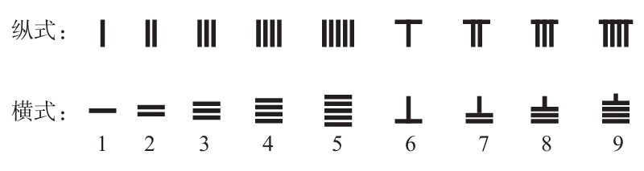
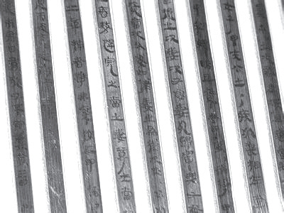
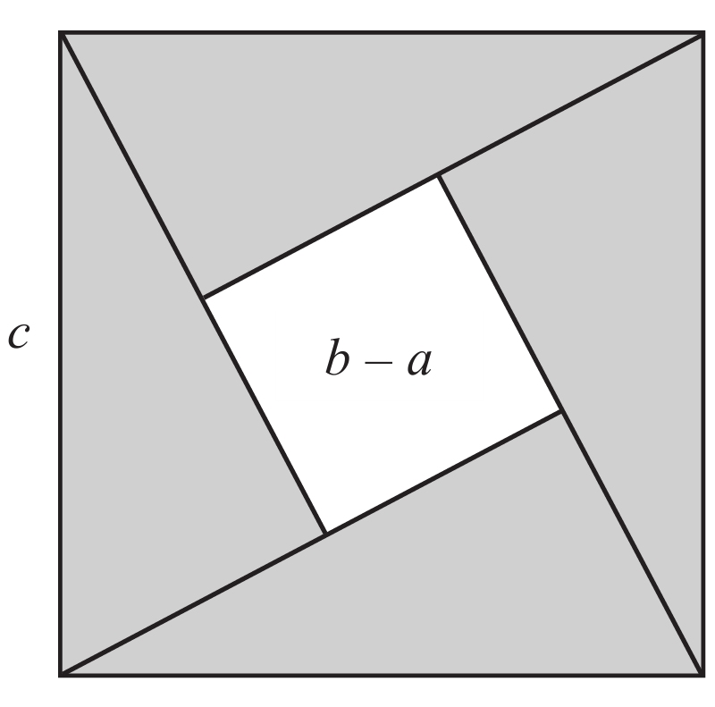
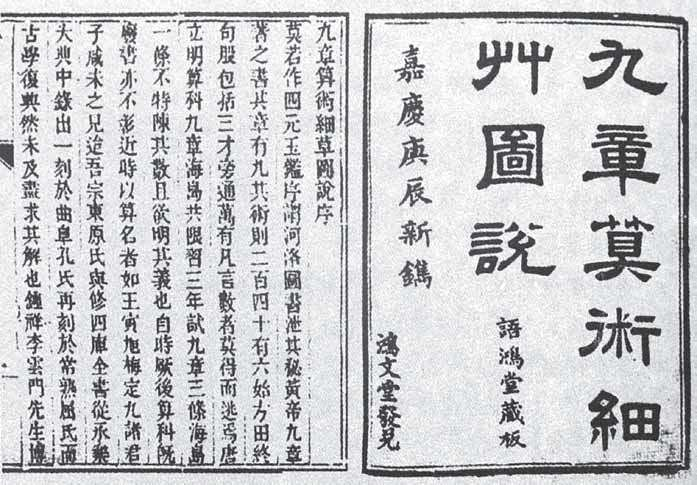
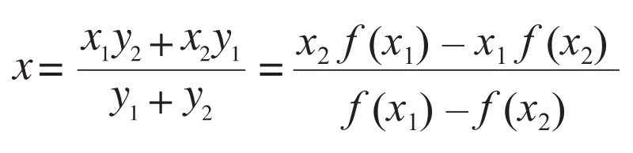
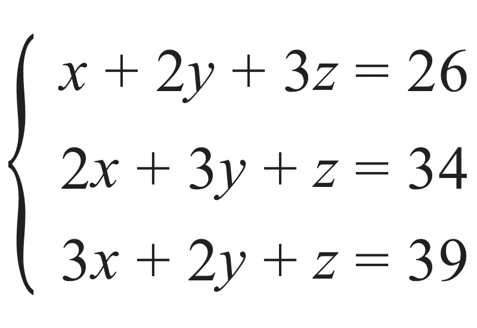
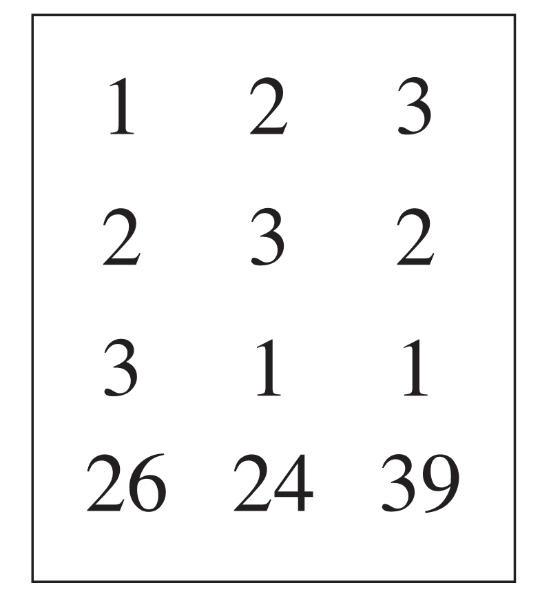
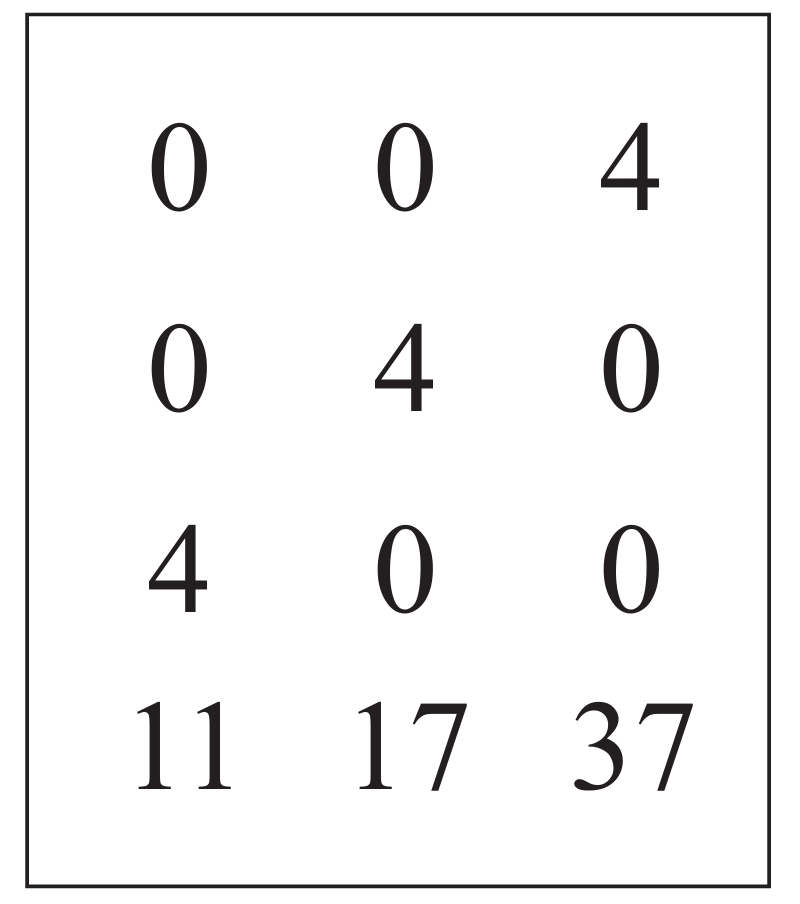
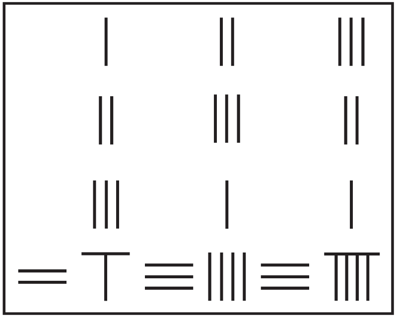

正当埃及和巴比伦的文明在亚、非、欧三大洲的接壤处发展的时候，另一个完全不同的文明在遥远的东方，也沿着黄河和长江流域发展并散播开来，这就是中国文明。学者们通常认为，在今天新疆的塔里木盆地和幼发拉底河之间，由于一系列高山、沙漠和蛮横的游牧部落的阻隔，远古时代任何迁徙的可能性都不存在。在公元前2700年到公元前2300年间，出现了传说中的五帝，之后又相继出现了一系列王朝。 [1] 尽管刻录汉字的竹板不如泥板书和纸草书耐久，但“由于中国人勤于记录，仍有相当多的资料流传下来”（英国科学史家李约瑟语）。
与巴比伦和埃及一样，远古时代的中国也有数和形的萌芽。虽说殷商甲骨文的破译仍未完成，但已发现有完整的十进制。最迟在春秋战国时代，就已出现严格的算筹计数，这种计数法分为纵横两种形式，分别表示奇数位数和偶数位数，逢零则虚位以待。关于形，司马迁（约公元前145—约前90）在《史记·夏本纪》（公元前1世纪）里记载，“（夏禹治水）左规矩，右准绳”，“规”和“矩”分别是圆规和直角尺，“准绳”则是用来确定垂线的器械，或许这算得上几何学的早期应用。

中国古代的算筹计数法
更为难得的是，与热衷探讨哲学和数学理论的希腊雅典学派一样，处于同一时期的中国战国（公元前475—前221）也有诸子百家，那是盛产哲学家的年代。其中，“墨家”的代表作《墨经》讨论了形式逻辑的某些法则，并在此基础上提出一系列数学概念的抽象定义，甚至涉及“无穷”的概念。而以善辩著称的名家，对无穷概念则有着更进一步的认识。道家的经典著作《庄子》记载了名家的代表人物惠施的命题：“至大无外，谓之大一。至小无内，谓之小一。”此处“大一”是指无限宇宙，“小一”相当于赫拉克利特的原子。
惠施（约公元前370—前310）是哲学家，宋国（今河南）人，当时的声望仅次于孔子和墨子。他曾任魏相15年，主张联合齐楚抗秦，政绩卓著。惠施与以写作《逍遥游》闻名的同时代哲学家庄周既是朋友，又是论敌，两人的鱼乐之辩是很著名的辩论。惠施死后，庄周叹息再无可言之人。惠施涉及数学概念的精彩言论尚有：
矩不方，规不可以为圆；
飞鸟之影未尝动也；
镞矢之疾，而有不行、不止之时；
一尺之棰，日取其半，万世不竭；
等等。从中可以看出，这些言论与早他一个世纪的希腊人芝诺的悖论有异曲同工之妙。惠施的后继者公孙龙（公元前320—前250）以“白马非马”之说闻名，虽然在逻辑学上区分了“一般”和“个别”，却未免有诡辩之嫌。
可惜的是，名、墨两家在先秦诸子中属于例外，其他包括更有社会影响力的儒、道、法等各家的著作则很少关心与数学有关的论题，而只注重治国经世、社会伦理和修心养身之道，这与古希腊学派的唯理主义有很大的差异。始皇帝统一中国以后，结束了百家争鸣的局面，还焚烧了各国史书和民间典藏。到汉武帝时（公元前140年）则独尊儒术，名、墨著作中的数学论证思想失去进一步发展的机会。不过，由于社会稳定，加上对外开放，经济出现了空前的繁荣，推动数学向实用和算法方向发展，也取得了较大的成就。
公元前47年，亚历山大图书馆在尤利乌斯·恺撒统率的罗马军队攻城时被部分烧毁，恺撒的军事行动是为了帮助他的情人克娄巴特拉（埃及艳后）夺取政权。后者是托勒密十二世的次女，先后与她的两个弟弟托勒密十三世和十四世，以及她和恺撒生的儿子—托勒密十五世共同执政。那时候的中国属于西汉后期，正处于第一个数学高峰的上升阶段。一般认为，中国最重要的古典数学名著《九章算术》就是在那个年代（公元前1世纪）成书的，而更为古老的数学著作《周髀算经》 [2] 的成书时间应该在此以前。

目前已知中国最早的数学著作《算术书》
值得一提的是，对中国古代科学技术史颇有研究的李约瑟（Joseph Needham，1900—1995）虽然认同《九章算术》代表了比《周髀算经》更为先进的数学水准，但却认为，我们对后者所能给出的确切的成书年代比起前者来还要晚两个世纪。显而易见，这是数学史家和考古学家的一大遗憾。李约瑟在其巨著《中国科学技术史》里叹息道：“这是一个比较复杂的问题……书中有一部分结果是如此古老，不由得让我们相信它们的年代可以追溯到战国时期。”
不仅《周髀算经》的成书年代无法考证，就连作者也不详，这与《几何原本》的命运有别。这部著作中最让人感兴趣的数学结果有两个。其一当然是勾股定理了，即关于直角三角形的毕达哥拉斯定理，该定理的提出至少是在毕氏（公元前6世纪）以前，但是没有欧几里得在《几何原本》之第一卷的命题47中所提供的证明。有意思的是，该定理是以记载西周初年（公元前11世纪）政治家周公与大夫商高讨论勾股测量的对话形式出现的。可以说，这两位也是中国历史上最早留名的与数学有关的人物。
周公是文王之子，武王之弟。武王卒后，他摄政并平定了叛乱，7年之后又还政于成年的成王。周公主张以礼治国，他制定了中国古代的礼法制度，使得周朝延续了800多年，孔子将其视为理想的楷模。商高在答周公问时提到“勾广三，股修四，径五”，这是勾股定理的特例，因此它又被称为商高定理。书中还记载了周公后人荣方和陈子（公元前六七世纪）的一段对话，包含了勾股定理的一般形式：
……以日下为勾，日高为股，勾股各自乘，并而开方除之，得邪至日。
不难看出，这是从天文测量中总结出来的规律。在中国古文里，勾和股分别指直角三角形中较短和较长的直角边，而髀的意思是大腿或大腿骨，也是测量日高的两处立表。《周髀算经》中另一个重要的数学结论即所谓的日高公式，它在早期天文学和历法编制中被广泛使用。
书中也有分数的应用、乘法的讨论以及寻找公分母的方法，这表明平方根当时已有应用了。值得一提的是，该书的对话中提到了治水的大禹，伏羲和女娲手中的规和矩，这表明当时已有测量术和应用数学了。此外，书中还有几何学产生于计量的零星观点。李约瑟认为，这似乎表明中国人从远古时代起就具有算术和商业头脑，他们对那种与具体数字无关的、单从某种假设出发得以证明的定理和命题所组成c的抽象几何学不太感兴趣。

赵爽用此图证明勾股定理
令人欣慰的是，3世纪的东吴数学家赵爽用非常优美的方法独立证明了勾股定理。他是在注释《周髀算经》时运用面积的出入相补法给出证明的。如上图所示，设直角三角形的两条直角边长分别为a和b，b>a，则以它的斜边c为边长的正方形可以分成5块，即一个边长为b–a的正方形和4个全等的直角三角形，计算化简可得a2 +b2 =c2 。这个证明与800年前毕达哥拉斯的证明可谓异曲同工，只不过毕氏的证明是后人推测的，而赵爽的证明却有案可查，且图形更为美丽。
与《周髀算经》不同的是，虽然《九章算术》的作者和成书年份也不详，但是基本上可以确定，此书是从西周时期贵族子弟必修的六门课程（六艺）之一的“九数”发展而来，并经过西汉时期的两位数学家的删补。为首的张苍（公元前256—前152）也是著名的政治家，曾为汉文帝的丞相，在位期间亲自制定了律法和度量衡。一般认为，《九章算术》是从先秦至西汉中叶经过众多学者编撰、修改而成的一部数学著作。
《九章算术》采用了问题集的形式，把264个问题分成9章，依次为：方田、粟米、衰分、少广、商功、均输、盈不足、方程、勾股。由此可以看出，这部书的重点是计算和应用数学，仅有的涉及几何的部分也主要是面积和体积的计算。粟米、衰分、均输这三章集中讨论了数字的比例问题，与希腊人用几何线段建立起来的比例论形成了鲜明的对照。“衰分”就是按一定的级差分配，“均输”则是为了解决粮食运输负担的平均分配问题。

清嘉庆年间刻印的《九章算术》
书中最有学术价值的算术问题应该是所谓的“盈不足术”，即求方程f（x）=0的根。先假设一个答数为x1 ，f（x1 ）=y1 ，再假设另一个答数为x2 ，f（x2 ）=－y2 ，求出

如果f（x）是一次函数，则这个解答是精确的；如果f（x）是非线形函数，则这个解答只是一个近似值。在今天看来，盈不足术相当于一种线形插值法。
在13世纪意大利数学家斐波那契所著《算经》（又名《算盘书》）中有一章专门讲“契丹算法”，指的就是“盈不足术”，因为欧洲人和阿拉伯人古时候称中国为契丹。可以想见，“盈不足术”是借着丝绸之路，经过中亚流传到阿拉伯国家，再通过他们的著作传至西方的。
在代数领域，《九章算术》的记载就更有意义了。在“方程”一章里，已经有了线性联立方程组的解法，例如：

《九章算术》里没有表示未知数的符号，而是把未知数的系数和常数垂直排列成一个矩阵（方程）图表，即

再通过相当于消元法的“直除法”，把此“方程”的前三行转化成只有反对角线上有非零元，即

从而得出答案。“消元法”在西方被称为“高斯消元法”，而“方程术”则被称为中国数学史上的一颗明珠。
除了方程术以外，《九章算术》中提到的另外两个贡献也非常值得称道。一是正负术，即正负数的加减运算法则；二是开方术，甚至有“若开之不尽者，为不可开”的语录。前者说明中国人很早就开始使用负数，相比之下，印度人在7世纪才开始，西方对负数的认识则更晚。后者表明中国人已经知道无理数的存在，可由于是在方程术中遇到的，因此并没有认真对待。重视演绎思维的希腊人就不一样了，他们不会轻易放过一个值得深究的机会。

用算筹表示联立方程组
在《九章算术》对几何问题的处理上，可以看出我们祖先的不足，例如“方田”里的圆面积计算公式表明，他们估算圆周率的值是3，这与巴比伦人的计算结果相当。而球体积计算公式得出的结果只有阿基米德所获得的精确值的一半，再考虑到圆周率取3，误差就更大了。不过，书中所列直线形的几何图形面积或体积的计算公式，基本上是正确的。《九章算术》的一个特色是把几何问题算术化或代数化，正如《几何原本》把代数问题几何化一样。但遗憾的是，书中几何问题的算法一律没有推导过程，因此只是一种实用几何。
[1] 2007年冬天公布的良渚文化城址，预示着夏朝或许不是中国历史上的第一个朝代。
[2] 1984年年初在湖北江陵张象山出土的一批西汉初年的竹简中，有一部《算术书》，体例也是问题集，但未分章卷，有可能是中国已知最早的数学著作。